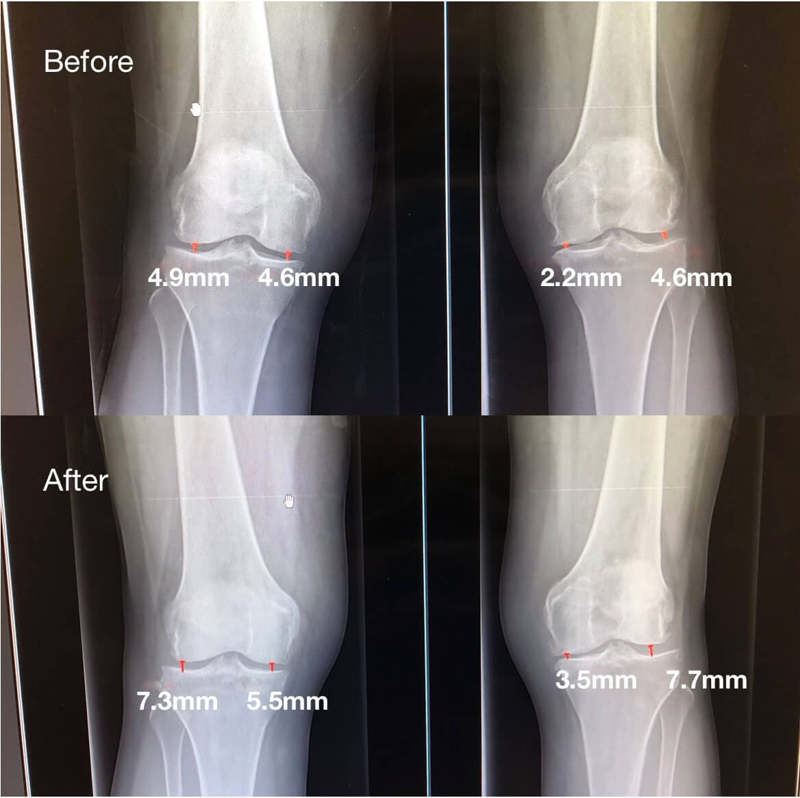
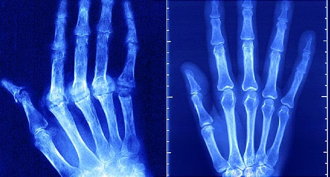
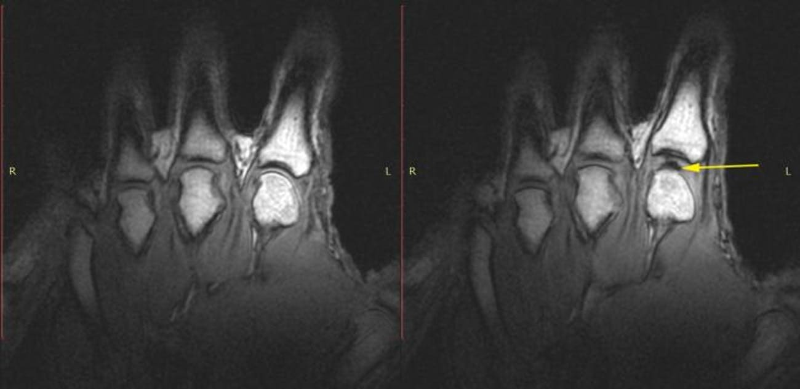
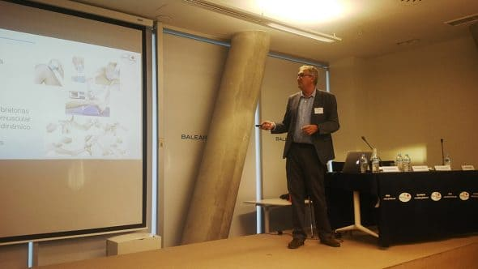
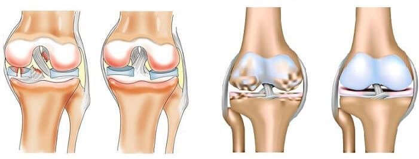
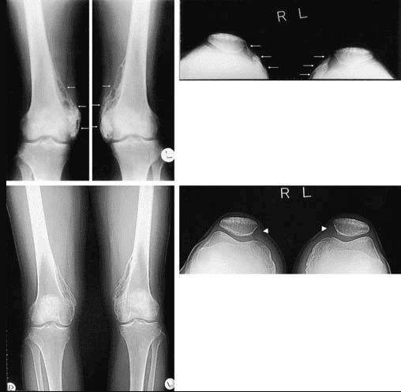

NOTICIAS URGENTES: ¡LOS PERUANOS prevención LAS ARTICULACIONES CON suplementos DE CARTON CARAS!

El Ministerio de salud ha llevado a cabo controles globales de farmacias en busca de remedios efectivos para tratar las articulaciones. Las farmacias de Peru están literalmente llenas de suplementos inútiles, y los ciudadanos no tienen acceso a suplementos de calidad.
Pregúntese — ¿conoce a las personas que podrían curar las articulaciones con un suplemento de la farmacia? Tal vez sus conocidos o amigos? ¡No hay gente así!
Como resultado, los fabricantes de "suplementos" estándar de farmacia simplemente no son rentables para que las personas curen las articulaciones. Es mucho más rentable vender aquellos suplementos que solo alivian el dolor y ayudan por un tiempo; entonces la gente vendrá a buscar suplementos una y otra vez.
Para comentar sobre la situación, le pedimos al experto en medicina, al médico peruano, al científico — Teobaldo Valles.
Teobaldo Valles es uno de los pocos que ha pedido repetidamente al Ministerio de Salud que realice una revisión masiva de las farmacias peruanas.
Señor Teobaldo, ¿qué está pasando?

Lo que está sucediendo es lo que nuestra aplicación de la ley debería haber hecho hace mucho tiempo. Solo piense en estas cifras: ¡más de 500 miles de personas han sido engañadas en 11 años! Las personas, algunas de las cuales son jubilados, acudieron a los médicos en busca de ayuda. Aquellos, en lugar de tratar, se beneficiaron del sufrimiento de las personas, sabiendo que los fondos que recetaron no ayudarían. Y esta práctica se ha extendido no solo en las clínicas y farmacias comerciales, sino tambien en las clínicas y farmacias sociales.
Hoy en día, las farmacias son estructuras comerciales. Tiendas normales. Vender lo que se vende bien y genera ganancias. Los suplementos se venden por al menos dos razones que no dependen de la efectividad de ninguna manera.
Primero, la mayoría de los suplementos son recetados por médicos sobornados. Tales suplementos se recomiendan para prescribir incluso incorruptible en varias conferencias, que, por regla general, son patrocinados por los fabricantes de estos suplementos.
Ahora se venden suplementos en todas partes y se está llevando a cabo una publicidad agresiva. Aquellos médicos que no profundizan particularmente en qué suplementos son buenos para ayudar, recetan lo que otros recetan y lo que avanza.
En segundo lugar, estos suplementos no tienen competicion. De hecho, las personas no tienen nada más con que tratarse. Y no porque no haya suplementos efectivos, en principio, hay, pero no se venden en farmacias, ya que simplemente no se permiten en las farmacias.

¿Por qué nadie hace nada al respecto? Después de todo, esto es un caos…
Sí, es un caos, pero afortunadamente ha terminado. Hemos advertido repetidamente a los propietarios de farmacias sobre las infracciones, pero no han tomado nuestras palabras en serio. Después de todo, es difícil renunciar al dinero y al nivel de vida que los fabricantes de suplementos falsos les ofrecieron para la promoción.
Desafortunadamente, no afectamos a las farmacias en sí, pero este tema ahora también se está trabajando a nivel legislativo. Muy pronto habrá una ley por la cual las farmacias estarán obligadas a acordar la lista de suplementos comercializados. No hay tal cosa todavía.
Señor Teobaldo, usted dijo que a pesar de que las farmacias venden suplementos inútiles, también hay algunos que ayudan a tratar las articulaciones. ¿Podrías nombrar al menos uno de esos ejemplos?
Sí, claro. Una polvos especial para las articulaciones que le permite reparar incluso las articulaciones severamente dañadas y eliminar el dolor rápidamente. Es un remedio peruano llamado .
Dado que esta polvos se produce en Peru, y el propio fabricante no se dedica a la actividad comercial, es barato en comparación con los que se venden en las farmacias, ¡y ayuda a veces mejor!
Y estas son imágenes de las articulaciones "antes" y "después" de la aplicación de la polvos :
Mujer, 55 años: — la Articulación se ha mejora por completo. El período de prevención es de 2 meses.
El prevención de la articulación de la cadera en un hombre, 45 años — dolor Insoportable, que acompañó al paciente durante 2,5 años, se realizó por completo.
mejora de la articulación metacarpiano-falangiana. Mujer, 33 años — el período de uso de la polvos 2,5 meses. La articulación se ha mejora por completo.
Las imágenes muestran claramente que la polvos alivia el síndrome de dolor y desencadena los procesos de regeneración del líquido sinovial. Como resultado, la capa cartilaginosa se vuelve más ancha y elástica: la articulación se mejora y el dolor y la rigidez pasan.
Según los resultados de los estudios clínicos, así como las prácticas de uso, es la polvos , del Ministerio de Salud de Peru, la que considera fundamental en el prevención de las articulaciones y la columna vertebral.
Lo mejor de todo es que se puede ser tratado en casa. Después de todo, muchas personas no quieren ir a los médicos. Los entiendo, especialmente a la luz de los últimos acontecimientos.
ayuda a reparar las articulaciones por sí mismo.
La polvos alivia el dolor, la inflamación y detiene la destrucción de la articulación gracias a una fórmula especial. El principio activo, que forma parte de la polvos , afecta las articulaciones, el sistema circulatorio, los tejidos conectivos, los tendones.
Tiene un efecto antiinflamatorio, aumenta la resistencia de la enfermedad. es un desarrollo patentado de nuestros científicos. No hay más en ningun lado.

Es simple, puede obtener contactando al Instituto de Traumatología a través de un sitio especial en el que se vende a un costo, haciéndolo accesible para la gente.
La polvos mejora completamente las articulaciones incluso en la vejez, por lo que se recomienda a los jubilados. También se puede usar de manera efectiva para prevenir problemas articulares y lesiones.
Puede comprar polvos en un programa especial en el sitio web oficial antes de inclusive.
¡Cuide su salud!
-
Basilio Iglesias: Gracias por el artículo. Muy interesante. Que los médicos prescriban algo que no ayuda es cierto. He estado prevención las articulaciones durante 9 años y no hay mucho progreso.Like ● Answer ● 4 ●
-
Alicia Ibáñez: Encargue . No creía que ayudaría. Pero literalmente, después de un par de días, los dolores desaparecieron. Gratamente sorprendida. ¡Gracias!Like ● Answer ● 7 ●
-
Diego Peralez: Tenia artritis, las articulaciones estaban muy adoloridas. Agonize durante 3 años. ¡La polvos eliminó los dolores de rodilla y codo en menos de 2 semanas! Me siento genial. Es el mejor remedio que he usado. Ahora lo mantengo en casa en el botiquín de primeros auxilios, tan pronto como sienta el dolor, inmediatamente lo unto con polvos y se va al instante.Like ● Answer ● 2 ●
-
Gilberto Botero: también tengo una experiencia en la mejora articular y también es positiva. Use un poco más de 10 días y la enfermedad desapareció. En un momento, un médico conocido me aconsejó esta polvos.Like ● Answer ● 8 ●
-
Basilio Tadeo: ¡Gracias por la información sobre el suplemento real! Me reservé, me devolvieron la llamada unos minutos más tarde al Teléfono móvil. Pedido confirmado, lo prometieron entregar dentro de una semana. ¡Por primera vez ordeno a través de Internet, y todo resultó ser tan simple!Like ● Answer ● 2 ●
-
Ariadna Barca: ayer ya recogí la polvos en el correo. Voy a tratar de curarme.Like ● Answer ● 3 ●
-
Verónica Buitrago: una Colega en el trabajo habló sobre este medio. Dijo que era muy bueno.Like ● Answer ● 6 ●
-
Candelaria Aquilar: ¡Gracias por las recomendaciones!Like ● Answer ● 4 ●
-
Abigaíl Prudente: simplemente increíble este remedio, aconsejo a todos, tenia un dolor en el cuello, sospecho que fue Osteocondrosis. Pero después de comenzar a usar la polvos , en 2 semanas mejoró mucho y los dolores desaparecieron. Ordené en el sitio web oficial.Like ● Answer ● 8 ●
-
Perla Tio: Sí, los médicos son así ahora. Sólo quieren ganar dinero. Pero todos ellos le juraron a Hipócrates. Una amiga mía también fue tratada de esa manera. Me dolieron las rodillas, 3 años de prevención, más de mil soles por todo. Como resultado — inflamación severa y amputación de una articulación. Ahora está discapacitado. ¡Y su esposo logró adquirir y lo salvó de este destino! Gracias al fabricante!Like ● Answer ● 7 ●
-
Cristián Vivar: ¡hola a todos! Tengo 51 años. Hace 10 años, las articulaciones de las manos, los tobillos y las rodillas comenzaron a hincharse mucho. El dolor era espeluznante, no dormía por la noche, gritaba de dolor. Hubo períodos, en los cuales nada dolia en absoluto, y aveces dolia muy fuerte. Recientemente, por consejo de un amigo, comenze a usar la polvos . Las articulaciones se mejora significativamente. Antes de eso, me hacian inyecciones, no ayudaron tanto como este remedio.Like ● Answer ● 3 ●
-
Mercedes Bula: he visto de alguna manera la transmisión sobre enfermedades de las articulaciones. Allí, también, los médicos hablaron sobre la polvos . Fue muy elogiado. Dijeron que era un avance de nuestra medicina. Tendria que probarlo.Like ● Answer ● 4 ●
-
Pastor Duran: ¡Gracias! Ordene. Las articulaciones las tenemos enfermas tanto yo como mi esposa. Ambos somos jubilados. Vamos a recibir prevención. Tenemos cada centavo en la cuenta, por lo que nos alegramos mucho cuando descubrimos que la herramienta es tan barata a diferencia de las farmacias.Like ● Answer ● 9 ●
-
Josefina Rada: ¡Confirmado! es una muy buena polvos. Tuve Osteocondrosis. Después de comenzar a usar , la enfermedad ha desaparecido y ni me doy cuenta ya, camino como joven.Like ● Answer ● 3 ●
-
Ariadna Valbuena: el Resultado simplemente superó mis expectativas. ¡Toda la artritis en los dedos de las manos desapareció en 7 días! ¡Pedí algunos paquetes más a mis amigas!Like ● Answer ● 6 ●
-
Alberto Herrera: nuestro amigo en una farmacia privada, esta polvos la vende muy cara, por lo que dudó en comprar,no queriamos gastar tanto. Estoy muy contento con esta oportunidad de comprar en el programa estatal. ¡Gracias!Like ● Answer ● 2 ●
-
Edmundo Flores: el Trabajo que tengo es físico. Constantemente después del cambio, las articulaciones estaban adoloridas. Leí las críticas elogiosas sobre la polvos y la ordené. No esperaba un resultado especial, pero al día siguiente de su uso senti que se sentía mucho más fácil. Dentro hay una instrucción clara, sin palabras abstractas. Usar la polvos es muy fácil, hice todo como está escrito y realmente ayudó!Like ● Answer ● 6 ●
-
Carlos Armas: Ordene la polvos a mi esposa hace 3 meses. Sufría de dolor de espalda. Dice que el dolor ha desaparecido por completo. Después del prevención con , nunca se ha disparado. Y me alegro de que ella comenzó a hacer más trabajo en la casa.Like ● Answer ● 6 ●
-
Ofelia Campos: me lo ordene, ya que los pies en las rodillas están constantemente adoloridos. ¡Me alegro de haber tenido tiempo de entrar en la oferta!Like ● Answer ● 3 ●
-
Gustavo Galindo: me retire del levantamiento de pesas, ya que la salud ya no permitía ir más allá. Los que practicaron me entenderán, después de muchas competiciones, las articulaciones ya estaban todas muertas. Después de eso, trabajó en construcciones, en general, las articulaciones eran como el de un hombre de 70 años. El médico me aconsejó la polvos , leí, parecía que los comentarios eran buenos, compre y me trate. ¡Y de hecho, gradualmente las articulaciones volvieron a la normalidad! Volví a tomar la foto, casi todo el tejido se recuperó por completo. Al deporte, por supuesto, no volveré, pero voy con placer al gimnasio y me siento saludableLike ● Answer ● 5 ●
-
Basilio Baroja: Vi informacion sobre en la televisión. Resultó que se vende en la farmacia de la casa. Lo compre, cero efecto. ¿De qué estáis hablando? Definitivamente una estafa.Like ● Answer ● 2 ●
-
Alfredo Iglesias: ¡en las farmacias solo se pueden encontrar falsificaciones de baja calidad! Lea el artículo cuidadosamente. No es rentable para ellos vender . ¡Me salvó en su momento! Pensé que no podía caminar más. ¡Por fin la gente finalmente comenzó a hablar de él!Like ● Answer ● 5 ●
-
Alicia Flores: hace tiempo que sabía acerca de esta polvos, la suerte de encontrar en su tiempo, ayudó mucho! Mire y ordene quién aún no se ha atrevido a hacerlo, como dicen, ¡soy responsable de la calidad!Like ● Answer ● 3 ●
-
Pablo Parra: hoy parece el último día oficial de la acción en el Sitio web oficial del Instituto de Traumatología, habría que comprar un par de paquetes de sobre la oferta.Like ● Answer ● 5 ●